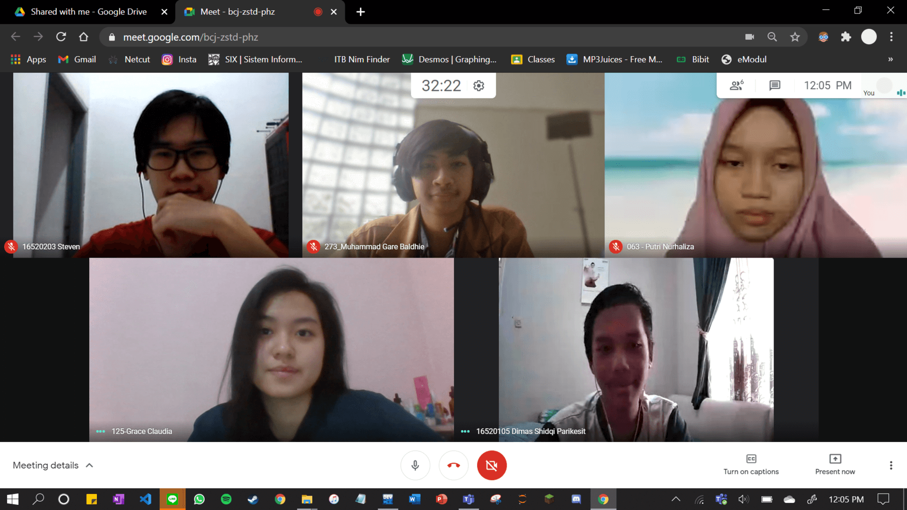

28.02.2021
05.03.2021
28.02.2021
05.03.2021
07.03.2021
11.03.2021
Teknik Telekomunikasi
2019
Bahasa pemrograman favoritnya javascript. Kak Ivan belajar
web development buat mempermudah apply intern atau pekerjaan
web dev/software dev. Dengan kata lain bisa nunjukin skill.
Sebenarnya dunia Telekomunikasi dan webdev ga ada hubungannya.
Untuk intern atau kerja kedepannya kak Ivan lebih milih di dunia
webdev dibanding telekomunikasi. Soalnya emang lebih suka webdev
dan lebih seru aja. Di telekomunikasi banyak fisikanya dan Kak
Ivan ga begitu suka.
Teknik Elektro
2019
Di kegiatan training ARC 2021 ini kak Dartha menjadi panitia bagian
dokumentasi, publikasi, operasional. Menurut kak Dartha, training ARC
kali ini cukup menarik karena ada peningkatan dalam jumlah pesertanya
dibanding tahun-tahun sebelumnya.
Kak Dartha banyak bercerita tentang
keseharian kru ARC. Sebagian besar kru ARC suka megang project-project
gitu, entah internal atau eksternal. Selain itu, kak Dartha juga membahas
tentang kehidupan akademiknya, baik di masa TPB maupun jurusan.
STEI
2020
Jurusan Impian : Informatika
Hobi : Tiduran dan dengerin musik
Tujuan Hidup : Belum tau
Asal SMA : SMAN 1 Garut
Asal Daerah : Garut
Alasan masuk ARC : Pingin nambahin soft skill di webdev
Dari akhir SMP/awal SMA tau ITB itu bagus, jadinya pengen masuk ITB. Pas udah susah susah “masuk” ITB, tapi mau masuk beneran ga bisa. Biar semangat biasanya ingetin diri sendiri, “kalau orang lain bisa, kenapa gua ga bisa”.
STEI
2020
Jurusan Impian : Telekomunikasi
Hobi : Tidur
Tujuan Hidup : Menang emas PKM 2 kali dalam satu tahun lol
Asal SMA : SMAIT Al Kahfi Bogor
Asal Daerah : Balikpapan (domisili), Jakarta (tempat lahir)
Alasan masuk ARC : Tugasnya menarik :D
Masuk ITB karena tiba-tiba aja hijau. Keluh-kesah selama di ITB, udah belajar seharian pol, dapet nilai nomor sepatu. Buat ngehype diri sendiri biasanya liatin linkedIn orang-orang.
STEI
2020
Ingin masuk ke jurusan STI. Asalnya dari Jakarta. Hobinya window shopping. Masuk ARC dengan harapan bisa mendapat banyak ilmu, bisa buat project yang kece badai dan bermanfaat bagi banyak orang. Terus juga mau nambah temen. Masuk ARC karena namanya unik dan penasaran banget webdev tuh ngapain aja.
STEI
2020
Nama panggilannnya Fifi. Asalnya dari Klaten. Ingin masuk jurusan informatika. Hobinya main gitar. Berharap dengan masuk ARC bisa dapet ilmu yang bermanfaat, bisa memperdalam dunia programming, bisa ikut project-project, dan dapet teman baru juga.
FTI
2020
Ingin masuk ke jurusan Teknik Fisika dan kebetulan udah peminatan. Hobinya nonton. Harapannya di ARC bisa dapet relasi dan belajar hal-hal baru. Selain itu juga pengen explore dunia web development.
STEI
2020
Ingin Masuk ke jurusan Informatika. Asalnya dari Klaten. Hobi main game dan nonton film. Harapan kedepannya bisa nambah pengalaman baik pengalaman lomba (lumayan kalo menang nambahin cv) maupun yang lain, menambah soft skill, dan juga menambah relasi.
STEI
2020
Asal SMA : SMAK 1 PENABUR
Asal Daerah : Jakarta
Alasan masuk ARC :iseng buat nambah wawasan
Hobi : Nonton
Makanan Favorit :Steak sama Taichan
Hewan Favorit :Anjing
#TIMBUBURGADIADUK!!
STEI
2020
Asal SMA : SMA N 3 Semarang
Asal Daerah : Semarang
Alasan masuk ARC : Belajar networking
Hobi : Gaming
Makanan Favorit : Indomie Goreng
Hewan Favorit : Ayam dan sapi
Suka hewan ayam dan sapi cuma karena rasanya sedap
STEI
2020
Alasan masuk ARC : Ingin menjadi berkembang dengan mempelajari
banyak hal baru khususnya bidang web development
Hobi : Bermain game dan menonton anime
Makanan Favorit : French Fries dan Kentan
Hewan Favorit : Kucing lucu banget nyaw nyaw
Ingin masuk surga terus kerja di google
STEI
2020
Asal SMA : SMA Methodist 2 Medan
Alasan masuk ARC : Belajar membuat website yang bagus
Hobi : Catur
Makanan Favorit : Cumi Goreng
Hewan Favorit : Hiu
Bisa main catur sambil ngerjain pr
STEI
2020
Nama Panggilan : Rendy
Asal SMA : SMA N 3 Bandung
Alasan masuk ARC : Ingin mengembangkan skill di web
development dan menambah relasi
Typing speed: 65 wpm
mandi 1 hari sekali, 2 kali kalo mood
STEI
2020
Nama Panggilan : Ropip
Asal SMA : SMA N 5 Bandung
Alasan masuk ARC : Pengen ikut keorganisasian yang berhubungan sama hardskill
Typing speed: 60 wpm
Sehari mandi 1 kali, kalo jum'at 2 kali
FTSL
2020
Nama Panggilan : Jervan
Asal SMA : SMA N 91 Jakarta
Alasan masuk ARC : Karena waktu semester 1 suka pengkom
dan akhirnya mau eksplor lebih dalam lagi soal dunia percodingan,
dan FYI dulu mau masuk STEI cuman terlalu takut hehehe
Typing speed: 51 wpm
Sehari mandi 2 kali
STEI
2020
Nama Panggilan : Zaky
Asal SMA : SMA N 8 Palembang
Alasan masuk ARC : Ingin belajar dunia web dan networking
Typing speed: 70 wpm
Sehari mandi 1-2 kali